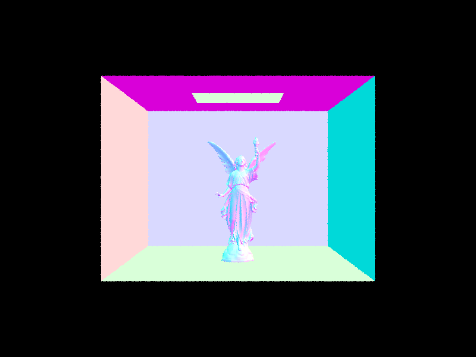
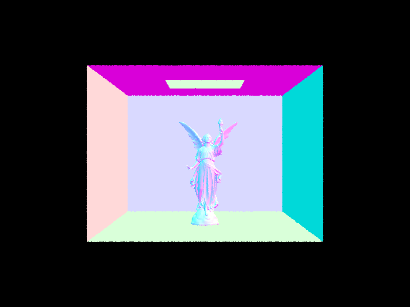

Overview
In this homework, I implemented some simple algorithms
Task 1
First I'll describe the ray generation algorithm.
To start, I generate an input vector3D called dir and set it equal to Vector3D(2*x*tan(radians(0.5*hFov)) - tan(radians(0.5*hFov)),2*y*tan(radians(0.5*vFov)) - tan(radians(0.5*vFov)), -1.0)
The assignment was just decided by the image provided in the spec. The idea is to construct a linear map that takes (0,0) to (-tan(radians(0.5*hFov)), -tan(radians(0.5*vFov)) and (1,1) to (tan(radians(0.5*hFov)), tan(radians(0.5*vFov))
We can verify that the above map satisfies those assignments. We then apply the constructed map on (x,y)
Then, since we are moving to the plane z = -1, we set the third component of the vector to be -1.
To move to world frame from camera frame, we then multiply dir by the c2w matrix and normalize it.
We then generate a ray with o = pos and d = dir. We then set min_t and max_t to be nclip and fclip respectively.
Now we describe the triangle interscetion algorihtm. For thsi, we just use Moller Trumbore, it is described below.
First define the edge vectors of the triangle as e1 = (p1,p2) = p2 - p1 ,e2 = (p1.p3) = p3 - p1
Then define the s vectors s,s1 and s2. Set s = (p1,o) where o is the origin of the ray. Set s1 to be cross(d,e2) where d is the direction vector of the ray, and finally s2 to be cross(s,e1).
Finally, we will define a vector containing the "time" of the ray (or t) and the barycentric coordinates of the point where the intersection occurs.
We define this augmented vector as res and set res = (t,b1,b2) = (dot(s2,e2), dot(s1,s), dot(s2,r.d))/dot(s1,e1). If the ray does intersect the triangle primitive, the below boolean expression will be true -
(t > r.min_t) && (t <= r.max_t) && (1.0 - b1 - b2 >= 0.0) && (b2 >= 0.0) && (b1 >= 0.0). The first two subexpressions check that the ray os visible, the last two check that the intersection point is an interior point of the triangle.
If the intersection happens, we set max_t of the ray to be t and update the intersection structure so that isect->normal = (1.0 - b1 - b2)*n1 + b1*n2 + b2*n3, isect->primitive = this triangle, isect->t = t.
For bsdf, we just call the function get_bsdf().
Now for sphere intersection-
we solve a quadratic equation ax^2 + bx + c using quadratic formula, where a = dot(ray.d,ray.d), b = 2.0*dot(ray.o - centre_of_sphere,ray.d), c = dot(r.o - centre_of_sphere,r.o - centre_of_sphere) - radius^2;
We check if we get complex roots by seeing if D = b^2 - 4ac is less than 0. If, yes we don't have an intersection. Else, we set t1 = min((-b + sqrt(D))/(2.0 * a), (-b - sqrt(D))/(2.0 * a)) and t2 = max((-b + sqrt(D))/(2.0 * a), (-b - sqrt(D))/(2.0 * a))
We then update ray.max_t = t1, and update intersction fields just as in the case of the triangle, except for the normal vector which is now the normalized version of ray.o + t1*ray.d - centre.
Here's some rendered images of banan and sphere-


Task 2
This taks was the implementation of BVH. Our BVH algorithm works as follows -
First, initialize a bounding box (bb) to compute the aggregated bb of all our primitives. We'll also keep track of the centroid with an instance of BoundingBox.
Then we run through all our primitives and add them to the bounding box while adding the running centroid to the centroid box. Then, if the number of primitives is less than the limit,
we are dealing with a leaf node, so we just assign start and end to be the start and end of the vector of primitives, assign left and right to be nullptrs. And finally assign the bbox to be the bounding box we constructed earlier.
If the number of primitives is more than the limit, we are ot dealing with a leaf node so we need to call the constructor recursively to create the left and right children of this node.
We use the centroid heuristic for splitting. So we just pick the axis for which centroid.extent is maximum, and divide across that axis.
For this, we check which primitives have their bounding boxes so that their bboxes have centroid to the left or right of the midpoint.
We put the ones on the left in an array (on the heap) called left (and accordingly for right).
Finally, recursively assign node->l = construct_bvh(left->begin(), left->end(), max_leaf_size) (and do the same for the right child).
Other than the construction algorithm, we also need an intersection algorithm. For this, we essentially use a binary search. But first let us provide the algorithm for bounding box intersection.
It is described below -
First compute (p_i - o_i)/d_i for all the x,y,z axes and for p equal to the max and min of the bbox.
Then assign max_time and min_time as the max and min of the above quantities.
if min_time > max_time or min_time > r.max_t or max_time less than r.min_t, there is no intersection so return false.
else set t0 = min_time, t1 = max_time and return true.
We can now describe the binary search algorithm. It is as follows-
First check if node->bb.intersect(ray, t1, t2) is true (we are checking if we intersect the outermost bbox). If not, return false.
Else if true, if the node is a leaf run through the bboxes of all its primitives and see of the ray intersects with them (recall that we defined these functions in task1).
if the node is not a leaf, call the search algorithm on the left and right children and return the "OR" of the two.
Below we've provided some images of dae files that were able to quickly render thanks to the bvh acceleration
 

Now, to see how well BVH performs and where it performs well, we'll render the images for teapot, cow and spheres and then compare the rendering times of eahc of them.
The rendering times for cow with and w/o BVH are 0.0730s and 9.9885s respectively.
For the teapot it is 0.654s vs 4.5802s
For the Spheres it is 0.1023s vs 0.1219s
These results are expected. The log(n) speedup of the BVH tree is much more applicable as n gets larger. for the case of the Spheres, since n is small, n and log(n) are comparable.
Due to this there is not much of a difference in the linear and recursive approahces. BVH mainly benifits those cases where we have a large number of primitives distributed in our scene (as seen by our experiments).
Images for teapot and cow are below (spheres was hown in the last question so we don't include it).
Task 3
This task was for direct illumination. For this, we need to model two things- one bounce and zero bounce raiation. For reflections, we first modify the functions f and sample_f to characterize the reflective properties of our objects.
In our case, we assume diffuse bsdf, so f just returns reflectance/2*PI. sample_f does the same thing except it also generates a sample for w_i.
Then, we need to implmenet the zero bounce radiance function. This is done by just calculating the emmission of the intersected object which can be done by the call isect.bsdf->get_emission().
Finally, we need to implement one bounce radiance. Here, we try to integrate all possible paths that arrive at our pixel from other points in the scene. Two types of one bounce functions are used - direct_hemisphere sampling based
and importance sampling based.
For hemisphere sampling, the approx algorithm is as follows-
iterate num_sample times
set wi = uniform hemishpere sample
convert wi to a direction through mult by o2w matrix
generate a new ray called sample = Ray(hit_p + EPS_F*dir, dir)
Then check for intersection with the current bvh (call the intersection structure newIsect.
If true, increment L_out by isect.bsdf->f(w_out, wi) * cos_theta(wi))*newIsect.bsdf->get_emission()
Then once the loop is done scale L_out by 2.0 * PI (the pdf) and divide by num_samples to get the final result.
The importance sampling based method is not too different. We only change the sampling mechanism and the estimator. The remaining parts of the algorithm are more or less the same.
The algorithm works as follows-
For every source of light in the scene-
if the light source is a point source :
1. set sample by calling light->sample_L. This will return a direction variable that we can convert into a wi by multiplying by o2w
2. generate ray = Ray(hit_p + EPS_D*(wi), (wi))
3. set ray.max_t = d2L - EPS_D; (where d2L is returned by our call to sample_L and represents dist to light)
4. accumulate the result just as in the uniform case, but this time divide by the pdf for each increment (pdf is again returned by sample_L)
5. increment count by 1
if the source is not a point source :
repeat the same 4 steps , but this time wrap it up in a loop that runs ns_area_light times
Below are the pictures-
Task 4
This task was about global illumination. The main idea here was to call the "one_bounce" function we defined earlier recursively until we hit some suitable threshold.
All the work was put into the at_least_ine_bounce function. We first initial L_out to be the one_bounce_radiance. Then, the algortihm is as follows-
if max_ray_depth <= 1 we return L_out
else if (coin_flip(rouletteProb) || r.depth <= max_ray_depth){
Vector3D direction = o2w* w_in;
Ray bounceRay = Ray(hit_p + EPS_F*direction, direction, (int)r.depth - 1 );
Intersection bounceIsect;
if (bvh->intersect(bounceRay, &bounceIsect)){
Vector3D bounceSample = at_least_one_bounce_radiance(bounceRay, bounceIsect);
Vector3D weightedSample = bounceSample *bsdf * cos_theta(w_in)/ pdf / rouletteProb;
L_out += weightedSample;
}
}
Task 5
This task was about adaptive sampling. Adaptive sampling is basically the idea that we don't need to take the same number of samples to estimate the integral over every pixel.
Instead, we can sample enough just so that we have assurance that the integral over that pixel has convereged to a reasonable extent.
We define "reasonable extent" with the help of confidence intervals. What this translates to i terms of equations is as follows-
we first define I = 1.96*running_std_dev/sqrt(num_running_samples). Then, we check if I <= maxTolerance*(running_mean). If the check is true, we stop generating further samples and use the integral value we currently have.
In terms of the actual implementation, we add a count variable for the totoal number of samples thus far (it is basically i+1).
We then add variables s1,s2 for the running sum and running sum of squares respectively.
Then, whenever count % samplesPerBatch == 0, we update the running mean as s1/double(count) and running variance as (s2 - s1*s1/double(count))/double(count-1).
Finally compute I and check the aforementioned condition for whether we should terminate or not. Once we terminate, we set sampleCountBuffer[x + y * sampleBuffer.w] = count
Here as the aimges -